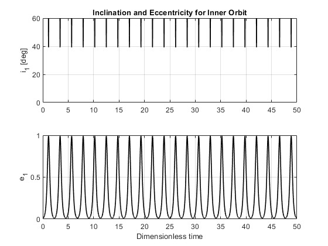
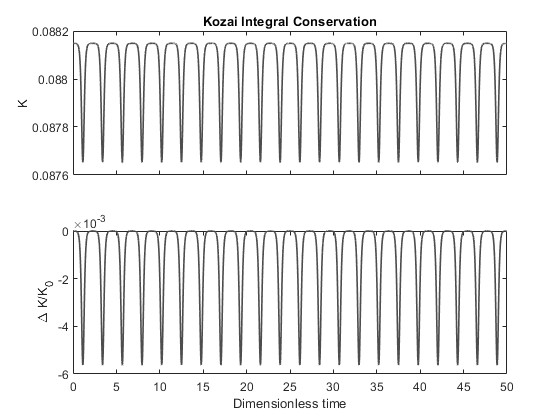
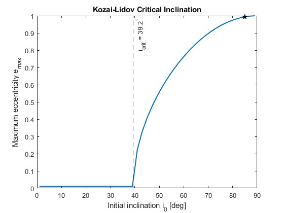
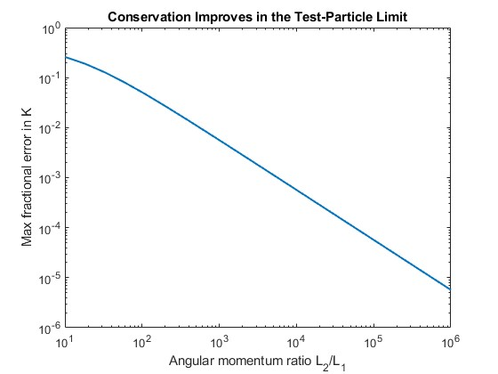

MODELING LONG-TERM ORBITAL EVOLUTION
I built a MATLAB simulation to explore Kozai-Lidov dynamics, a mechanism in which gravitational interactions can drive large, long-term changes in an orbit's eccentricity and inclination.
Starting from a highly inclined, nearly circular orbit, the simulation captures the characteristic exchange between inclination and eccentricity and shows how a seemingly simple initial orbit can evolve dramatically over time.
The project combines numerical integration with targeted parameter studies, giving me a way to visualize the dynamics while also testing how the model behaves across different initial conditions and assumptions.

Simulated evolution of inclination and eccentricity, showing their coupled oscillation over time.
FROM PHYSICS TO A NUMERICAL MODEL
I implemented a reduced quadrupole-order model in MATLAB and integrated the resulting equations of motion with ODE45. The simulation reconstructs the inner orbit's eccentricity and inclination from its angular momentum and evolves the system over a dimensionless time span.
I chose a highly inclined initial case to make the characteristic Kozai-Lidov behavior easy to observe, then used the same framework to investigate how the response changes as the initial conditions vary.
The focus of the project was not simply producing a trajectory, but building a compact simulation that could be used to explore orbital behavior and test the assumptions behind the model.
CHECKING THE MODEL, NOT JUST THE PLOT
I included a conservation check to verify that the numerical solution remained consistent with the expected behavior of the simplified model.
Tracking the conserved quantity over the simulation provided a practical way to distinguish meaningful orbital behavior from numerical error. The result is a model that can be evaluated quantitatively rather than judged only by whether the plots look physically reasonable.

Numerical conservation check used to assess the stability of the simulation.
EXPLORING THE SPACE AROUND A SINGLE CASE
Rather than stopping at one orbital configuration, I swept the initial inclination across a broad range and recorded the maximum eccentricity reached in each simulation.
The resulting trend makes the Kozai critical inclination visible and shows how strongly the orbital response depends on the initial geometry of the system. I also varied the outer-to-inner angular momentum ratio to examine how the simulation behaves as it approaches the test-particle limit, connecting the numerical results back to the assumptions of the reduced model.

Highlights transition near the critical inclination.

Trend in conservation error near the test-particle limit.
WHAT THIS PROJECT TAUGHT ME
- Numerical simulation can make complex orbital behavior intuitive through visualization.
- Parameter studies reveal more about a dynamical system than a single nominal case.
- Conservation checks are a useful way to validate numerical models beyond visual inspection.
- Model assumptions matter just as much as the equations being solved.
- Good computational tools should make it easy to explore, test, and interpret physical behavior.